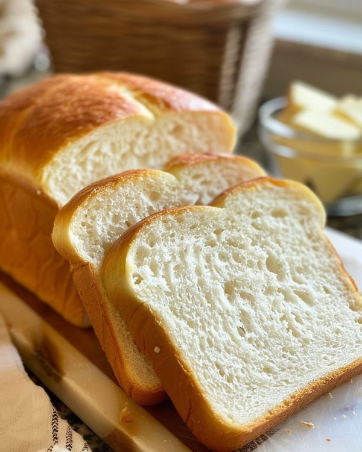
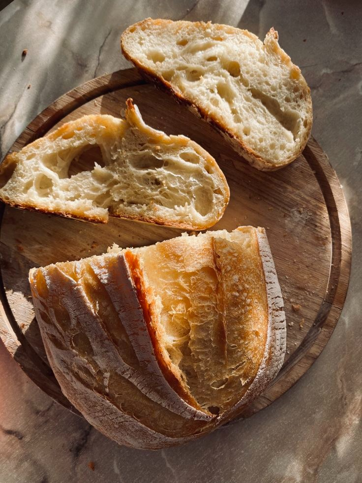

Ingredientes
- 1 xícara de chá de polvilho doce (250 g)
- Meia xícara de chá de leite (120 ml)
- 1/4 de xícara de chá de óleo (60 ml)
- Meia colher de chá de sal (ou a gosto)
- 1 ovo
- 1 xícara de chá de queijo ralado (mussarela, parmesão ou meia-cura
Modo de Preparo
Esquentar o líquido: Em uma panela pequena, coloque o leite, o óleo e o sal. Deixe ferver.Escaldar o polvilho: Coloque o polvilho doce em uma tigela. Despeje o líquido fervente por cima do polvilho e mexa bem.Esfriar e misturar: Espere a mistura amornar. Acrescente o ovo e o queijo ralado.Modelar: Misture tudo com as mãos até formar uma massa unida. Unte as mãos com um pouco de óleo e faça pequenas bolinhas.Assar: Coloque as bolinhas em uma assadeira untada. Leve ao forno pré-aquecido a 200°C por cerca de 20 minutos, até dourarem
Ingredientes
- 1 e 1/2 xícara de chá de fubá (200 g)
- 1 xícara de chá de farinha de trigo (130 g)
- 1 xícara de chá de açúcar (180 g)
- Meia xícara de chá de leite (120 ml)
- 1/4 de xícara de chá de óleo (60 ml)
- 2 ovos
- 1 colher de sopa de fermento em pó
- 1 pitada de sal
- 100 g de goiabada cortada em cubos pequenos
Modo de Preparo
Misturar os secos: Em uma tigela, adicione o fubá, a farinha de trigo, o açúcar, a pitada de sal e o fermento. Misture bem.
Adicionar os líquidos: Junte os ovos, o óleo e o leite aos ingredientes secos. Mexa com uma colher ou fouet até obter uma massa homogênea.
Modelar: Unte as mãos com um pouco de óleo ou farinha e faça pequenas bolinhas com a massa. Acomode-as em uma assadeira untada e enfarinhada, deixando um espaço entre elas.
Colocar a goiabada: Passe os cubos de goiabada em um pouco de farinha de trigo (para não derreterem totalmente) e pressione um cubo no centro de cada broa.
Assar: Leve ao forno pré-aquecido a 180°C por aproximadamente 25 a 30 minutos, até que a base esteja levemente dourada.

Ingredientes
- 3 xícaras de farinha de trigo (aproximadamente)
- 1 colher de sopa cheia de fermento biológico instantâneo (10 g)
- 3 colheres de sopa de manteiga em temperatura ambiente
- 2 colheres de sopa rasas de açúcar
- 2 ovos batidos ligeiramente
- 1 colherinha de sal
- ½ xícara de água em temperatura ambiente
- 100 g de manteiga em temperatura ambiente (para folhar)
- 1 colher de sopa de farinha de trigo (para folhar)
- 1 ovo batido para pincelar
Modo de Preparo
1. Preparar a massa: Em uma tigela, misture a farinha de trigo, o fermento biológico instantâneo, o açúcar e o sal. Adicione as 3 colheres de sopa de manteiga, os 2 ovos batidos e a água aos poucos. Amasse bem até obter uma massa lisa e homogênea.
2. Primeira fermentação: Cubra a massa com um pano limpo ou plástico filme e deixe descansar por cerca de 30 minutos, ou até dobrar de volume.
3. Preparar a mistura para folhar: Em uma tigelinha, misture os 100 g de manteiga em temperatura ambiente com a 1 colher de sopa de farinha de trigo até formar uma pastinha uniforme.
4. Folhar a massa: Abra a massa descansada com o auxílio de um rolo em uma superfície enfarinhada até formar um retângulo. Espalhe a mistura de manteiga com farinha por toda a superfície da massa. Dobre a massa em três partes (como uma carta) e abra novamente com o rolo. Repita a dobra para criar as camadas folhadas.
5. Modelar: Abra a massa na espessura desejada e corte no formato preferido (como croissants ou pãezinhos folhados). Acomode as peças em uma assadeira untada e enfarinhada.
6. Segunda fermentação: Deixe os pães descansarem na assadeira por mais 20 a 30 minutos para crescerem novamente.
7. Pincelar e assar: Pincele a superfície com o ovo batido. Leve ao forno pré-aquecido a 180°C por cerca de 25 a 30 minutos, até que fiquem bem dourados e assados.
Ingredientes
- 2 xícaras de chá de farinha de trigo
- 1 e 1/2 xícara de chá de açúcar
- 1 xícara de chá de chocolate em pó ou cacau em pó
- 1 xícara de chá de óleo
- 1 xícara de chá de água morna
- 3 ovos
- 1 colher de sopa de fermento em pó
- 1 pitada de sal
Modo de Preparo
1. Misturar os secos: Em uma tigela grande, peneire a farinha de trigo, o açúcar, o chocolate em pó e a pitada de sal. Misture bem.
2. Adicionar os líquidos: Acrescente os ovos, o óleo e a água morna. Misture delicadamente com um fouet ou colher até obter uma massa lisa e homogênea.
3. Adicionar o fermento: Por último, junte o fermento em pó e misture suavemente apenas para incorporar à massa.
4. Despejar na fôrma: Transfira a massa para uma fôrma untada e enfarinhada (ou polvilhada com chocolate em pó).
5. Assar: Leve ao forno pré-aquecido a 180°C por cerca de 35 a 40 minutos. Faça o teste do palito: espete um palito no centro do bolo; se sair limpo, está pronto.

Ingredientes
- 4 xícaras de chá de farinha de trigo (cerca de 500 g)
- 1 e 1/4 xícara de chá de água morna ou em temperatura ambiente (300 ml)
- 1 colher de sopa de fermento biológico seco (10 g) ou 30 g de fermento fresco
- 1 colher de chá de sal (10 g)
- 1 colher de chá de açúcar (5 g)
- 1 colher de sopa de manteiga ou margarina
Modo de Preparo
1. Ativar o fermento: Em uma tigela, misture a água, o açúcar e o fermento biológico. Deixe descansar por cerca de 5 a 10 minutos até formar uma leve espuma.
2. Preparar a massa: Adicione a farinha de trigo, o sal e a manteiga à mistura de fermento. Amasse bem sobre uma bancada limpa por cerca de 10 a 15 minutos, até obter uma massa lisa, macia e elástica.
3. Primeira fermentação: Coloque a massa em uma tigela coberta com um pano limpo e deixe descansar em local aquecido por cerca de 1 hora, ou até dobrar de tamanho.
4. Modelar os pães: Divida a massa em porções iguais (cerca de 8 a 10 pedaços). Abra cada pedaço com o rolo formando um retângulo e enrole como um rocambole. Acomode os pães em uma assadeira untada ou enfarinhada.
5. Segunda fermentação: Cubra novamente os pães modelados e deixe crescer por mais 40 minutos.
6. Fazer o corte e preparar o forno: Pré-aqueça o forno a 220°C. Com uma lâmina ou faca bem afiada, faça um corte longitudinal raso no topo de cada pão. Borrife um pouco de água sobre eles ou coloque uma assadeira com água quente na grade inferior do forno para criar vapor (isso garante a casquinha crocante).
7. Assar: Asse por cerca de 15 a 20 minutos, até que fiquem bem dourados e crocantes.
Ingredientes
- 4 xícaras de chá de farinha de trigo (cerca de 500 g)
- 1 pacote de fermento biológico seco (10 g)
- 1 xícara de chá de leite morno (240 ml)
- 3 colheres de sopa de açúcar
- 2 colheres de sopa de manteiga em temperatura ambiente
- 2 gemas
- 1 pitada de sal
- Óleo para fritar
- Açúcar refinado ou de confeiteiro e canela em pó para polvilhar
Modo de Preparo
1. Preparar a massa: Em uma tigela grande, misture o leite morno, o açúcar e o fermento biológico. Adicione as gemas, a manteiga e o sal. Vá acrescentando a farinha de trigo aos poucos, misturando até a massa começar a grudar menos nas mãos.
2. Sovar e descansar: Transfira a massa para uma bancada enfarinhada e sove por cerca de 10 minutos, até que fique bem lisa e macia. Cubra a massa com um pano e deixe descansar por 1 hora, ou até dobrar de tamanho.
3. Modelar: Divida a massa em porções pequenas (cerca de 12 a 15 partes) e faça bolinhas bem lisas. Acomode as bolinhas em uma assadeira enfarinhada, deixando um espaço entre elas. Cubra e deixe crescer novamente por mais 40 minutos.
4. Fritar: Aqueça o óleo em fogo médio-baixo (não deixe esquentar demais para não queimar por fora e ficar cru por dentro). Frite os sonhos aos poucos, virando para dourar por igual de ambos os lados.
5. Finalizar: Retire com uma escumadeira e escorra em papel-toalha. Enquanto ainda estiverem mornos, passe os sonhos no açúcar com canela para confeitar.

ingredientes
- 265g de farinha de trigo
- 5 colheres de sopa de açúcar
- 4 colheres de chá de sal
- 4 colheres de sopa rasas de fermento
- 6 colheres de sopa de banha
- 4 copos de água
Modo de preparo Coloque a farinha de trigo em uma bacia. Acrescente o fermento, o sal, o açúcar e a banha. Misture os ingredientes e, por último, adicione a água. Amasse até obter uma massa homogênea e consistente. Passe a massa no cilindro. Deixe descansar por 2 horas e 30 minutos. Asse em forno preaquecido a 260 °C por aproximadamente 40 minutos. Rendimento: cerca de 4 pães.
ingredientes
- 500g de farinha de trigo
- 10g de fermento biológico seco
- 300ml de água morna
- 2 colheres de sopa de azeite
- 1 colher de chá de sal
- 200g de molho de tomate
- 300g de queijo muçarela ralado
- Orégano a gosto
Modo de preparo
Misture a farinha, o fermento e o sal em uma tigela. Adicione a água morna e o azeite, misturando até formar uma massa. Sove por cerca de 10 minutos e deixe descansar por 1 hora. Abra a massa, coloque em uma forma de pizza, espalhe o molho de tomate, adicione a muçarela e o orégano. Leve ao forno preaquecido a 220°C por aproximadamente 20 minutos, ou até a massa ficar dourada.